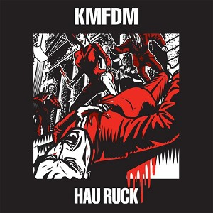

Hau Ruck (2005)
RockInterviewWorld
| Artist | KMFDM |
|---|---|
| Year | 2005 |
| Genre | Rock, Interview, World |
| Tracks | 12 |
Track List
| 1 | Free Your Hate | 4:59 |
| 2 | Hau Ruck | 5:21 |
| 2 | Hau Ruck Interview | 83:09 |
| 3 | You're No Good | 4:59 |
| 4 | New American Century | 4:51 |
| 5 | Real Thing | 5:05 |
| 6 | Every Day's A Good Day | 4:44 |
| 7 | Mini Mini Mini | 2:55 |
| 8 | Professional Killer | 4:33 |
| 9 | Feed Our Fame | 4:31 |
| 10 | Ready To Blow | 4:27 |
| 11 | Auf Wiederseh'n | 6:14 |